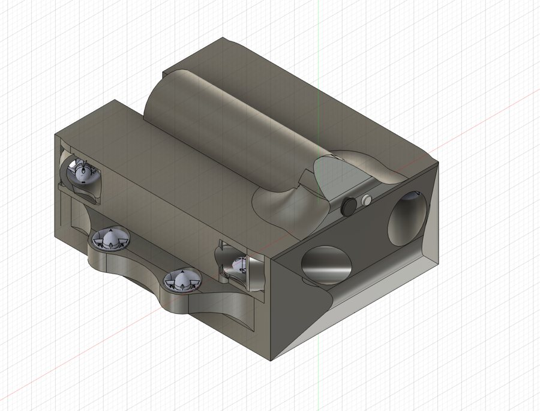
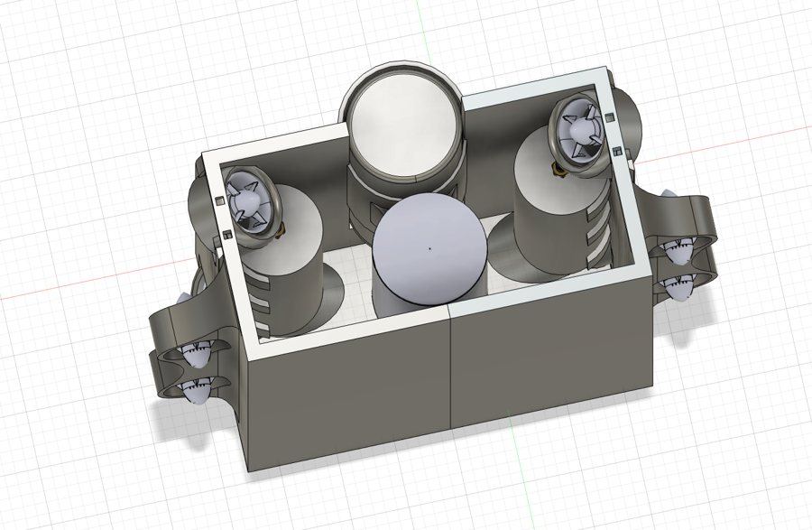
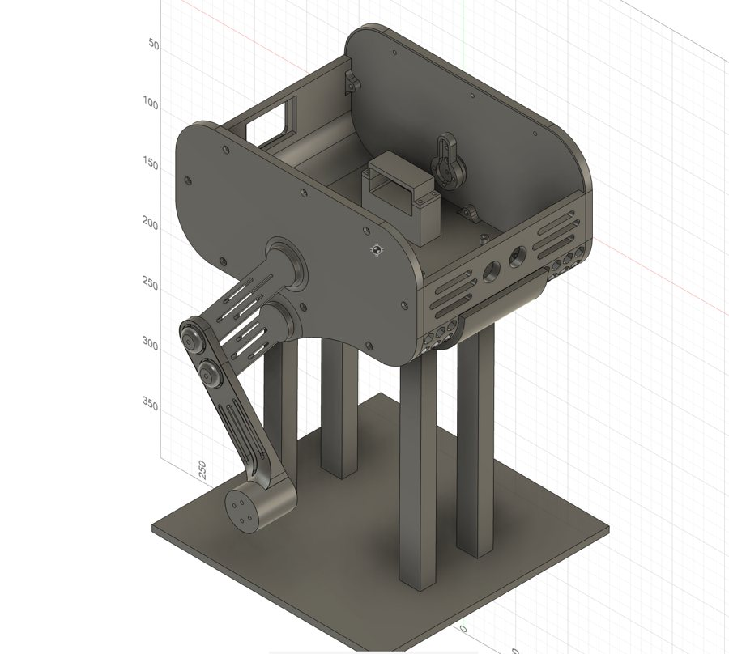
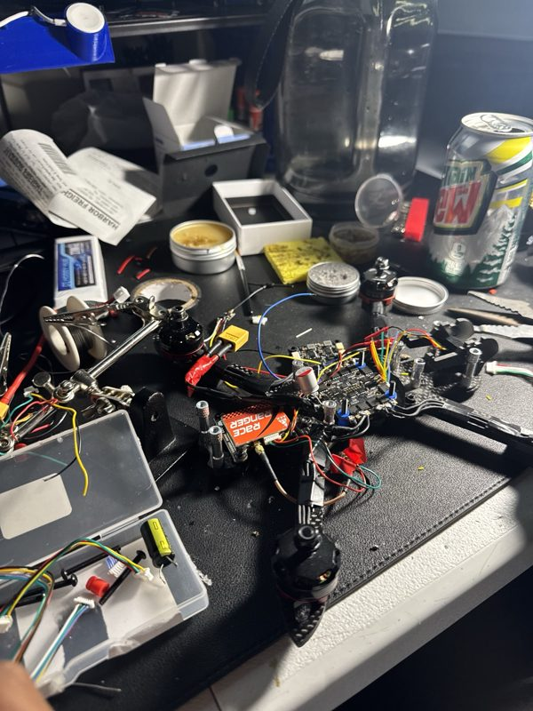

Projects
Things I've built outside the main RoboSub vehicle, newest first. For my RoboSub work, see the RoboSub page.
Search and recovery ROV prototype


This is a prototype vehicle for USM Robotics' search and recovery program. The program's goal is to build underwater vehicles for law enforcement and emergency teams in our region. I handle electronics, hardware and 3D modeling. The program is still early, so I can't share many details yet.
Tools: electronics, hardware, 3D modeling
Self-balancing robot
 Loading 3D model…
Loading 3D model…
A two-wheeled balancing robot with two controllers. An ESP32 runs the fast balance loop, and a Raspberry Pi 5 runs ROS 2. Each leg has a shoulder and an elbow joint, so the robot can raise and lower itself.
I just finished the full design in Fusion 360 and have the wiring, IMU calibration and PID balance loop planned out. Next is assembly and the first round of code.
Tools: ESP32, Raspberry Pi 5, PID control, ROS 2, Fusion 360
FPV drones


Over the summer I built three FPV drones from scratch, including a 5-inch freestyle quad. That meant soldering, setting up and tuning Betaflight, and installing receivers. I also brought an old drone back to life by remapping its flight controller's UARTs so it could run a modern ELRS receiver.
Tools: Betaflight, ELRS, F405 flight controller, soldering
DRYSH wireless console
DRYSH is a wireless control deck built around an ESP32, with rotary knobs, a small color display and Bluetooth. A computer sees it as a keyboard, so it works without drivers. I got the display running, wrote a boot animation, and fixed jittery knob input with debouncing.
I got it to a working prototype and then ran out of time to keep going. I'd like to pick it back up.
Tools: ESP32, Bluetooth HID, TFT display, Wokwi